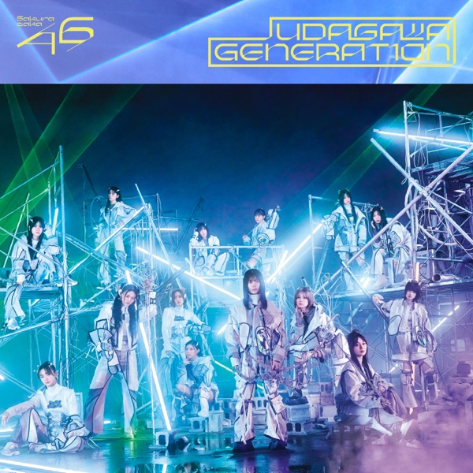

サカミチ
サカミチ卒業写真だけが知ってるそつぎょうしゃしんだけがしってる

初収録リリース「UDAGAWA GENERATION」のジャケット
日向坂46
発売日：2025-01-29
収録：UDAGAWA GENERATION（13thSG）
種別：表題曲
センター：小坂菜緒
作曲：ナスカ
編曲：野中“まさ”雄一
ライブ披露：22件
フォーメーション
上が後列、下が前列です。色付きがセンター。（公式発表に基づく）
 宮地すみれ
宮地すみれ平尾帆夏
 上村ひなの
上村ひなの 森本茉莉
森本茉莉 山口陽世
山口陽世山下葉留花
 佐々木久美
佐々木久美 金村美玖
金村美玖 河田陽菜
河田陽菜 松田好花
松田好花 佐々木美玲
佐々木美玲 正源司陽子
正源司陽子 小坂菜緒
小坂菜緒参加メンバー（14名）
佐々木久美、佐々木美玲、金村美玖、河田陽菜、小坂菜緒、松田好花、上村ひなの、森本茉莉、山口陽世、正源司陽子、平尾帆夏、藤嶌果歩、宮地すみれ、山下葉留花
この曲が披露されたライブ（22件）
新しい順に20件まで表示しています（全22件）。
同じリリースの曲
卒業写真だけが知ってる、SUZUKA、孤独たちよ、あの娘にグイグイ、43年待ちのコロッケ、Instead of you、足の小指を箪笥の角にぶつけた